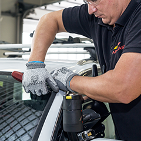
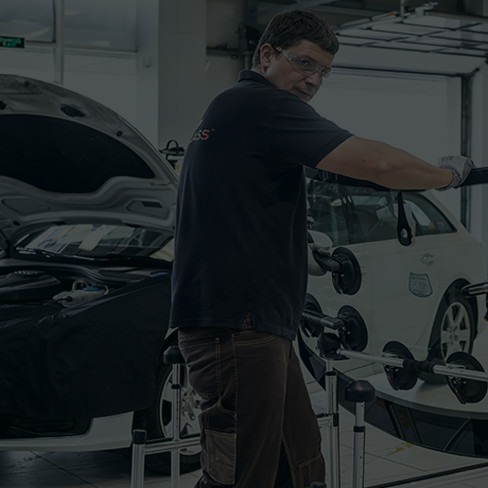
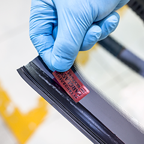
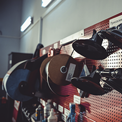
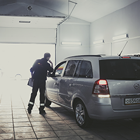
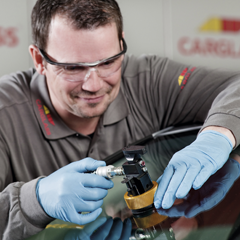
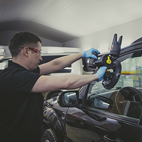

Ремонт автостекол 3 990 рублей
Ремонт стекол автомобиля:
быстро, без следов, с гарантией
Щебень, выпавший из кузова впередиидущего грузовика, камень, вылетевший из-под колес, шип, отскочивший с шины, – все это может стать причиной ремонта автостекла. Повреждение зоны обзора отвлекает от ситуации на дороге. К тому же под вибрациями и колебаниями температур оно может привести к появлению крупной сети трещин.
Восстановите стекло в автоцентре Carglass. Благодаря использованию фирменной технологии Glass Medic ремонт автостекла выполняется за час и обходится дешевле его замены. На результат даем гарантию – 10 лет! Наше предложение доступно всем жителям Москвы. Сервисные центры Carglass по ремонту стекол автомобилей также работают в Санкт-Петербурге, Новосибирске, Екатеринбурге и Туле.
Сервисные центры Carglass® есть в Москве, Санкт-Петербурге, Екатеринбурге и Новосибирске.
Ремонтировать или менять?
Чтобы определить, возможен ли ремонт скола на стекле автомобиля, нужно проверить скол на соответствие следующим условиям:
01 - Диаметр не должен превышать монету достоинством 5 рублей;
02 - Если скол попадает в водительскую зону видимости, его допустимый диаметр – не более 10 мм;
03 - Расстояние до края стекла должно быть более 6 см.
В случае несоответствия хотя бы одному из этих требований стекло автомобиля подлежит замене.
Цены
Замена автостекла за 1 час 1 990 руб.
Ремонт скола по фирменной технологии Glass Medic® 3 990 руб.
Полировка фар 750 руб.
Обработка стекол Антидождем 1 510 руб.
Если действующий полис автострахования покрывает повреждения автостекол, замена будет выполнена БЕСПЛАТНО.Уточняйте подробности в контакт центре по телефону 8-800-555-4843
Ремонт стекол по маркам
В каких случаях мы ремонтируем трещины
стекла автомобиля
Некоторые автосервисы отказываются от проведения ремонта трещин стекла автомобиля или же берутся за работы независимо от характера повреждения. Мы знаем, как объективно оценить возможность оказания услуг и в каких случаях их можно предоставить, гарантируя качество и долговечность результата.
При возникновении трещины рекомендуем скорее производить ремонт автостекла, и вот почему. После появления она начинает увеличиваться даже при воздействии малейших нагрузок и ползти, стремясь достигнуть края стекла. Если длина трещины не превышает 15 см, автостекло можно легко восстановить. Однако если ее длина будет больше 100-рублевой купюры, придется полностью заменить стекло, так как его ремонтопригодность в этом случае будет невысока.
Сколы и царапины обычно имеют небольшие размеры. Однако такие локальные повреждения, согласно лабораторным исследованиям Belron*, рано или поздно превращаются в трещину, если не предпринимать никаких действий по их устранению. Проведение ремонта стекла автомобиля с царапиной или сколом возможно! Специальный суперполимер помогает полностью восстановить прочность автостекла до заводских показателей. К тому же предварительный ремонт несет финансовую выгоду: эта услуга в среднем стоит в 10–15 раз дешевле, чем покупка нового стекла.
Если у Вас КАСКО, то заменим стекло бесплатно*
* если Ваш действующий полис КАСКО покрывает повреждения автостекол
Замена автостекол в Carglass®
не отменяет и не ограничивает
гарантию завода-изготовителя
Дилер не имеет веских оснований требовать проведения восстановительного ремонта исключительно на его станции.
Технология ремонта сколов в Carglass®
Технология Glass Medic®, разработанная материнским концерном Berlon® Group, позволяет отремонтировать стекло автомобиля без следа. Несколько проверенных решений обеспечивают превосходное качество ремонта скола.
Мы не сверлим сколы.
Наши специалисты не наносят дополнительных повреждений стеклу, и, соответственно, не снижают его прочность. Засверливание применяется в большинстве автосервисов, однако оно снижает безопасность автомобиля и уменьшает вероятность провести ремонт стекла незаметно.
Мы используем эксклюзивный полимер.
Berlon® Group разработала собственный состав оптического полимера для заполнения царапин и сколов. После отверждения он обретает прочность и прозрачность настоящего стекла.
Мы применяем инновационное оборудование.
Специалисты Carglass® имеют уникальный инструментарий для ремонта стекол: аппараты для нанесения полимера под давлением, ультрафиолетовые отвердители, оборудование для тщательной полировки. Это запатентованные разработки Berlon® Group, недоступные другим сервисам.
Примеры выполненных работ
-

-

-

-

-

-

-



Почему лучше обратиться в Carglass®?
Carglass® всегда старается в первую очередь отремонтировать стекло, если это возможно, и сохранить деньги клиента. Если скол не ремонтопригоден, то мы постараемся заменить автостекло за 1 час в заранее назначенный день.
Вам не требуется оставлять автомобиль на сутки для проведения работ. В Carglass® при замене автостекла, можно эксплуатировать автомобиль уже через 1 час после установки. При желании Вы можете оставить свой автомобиль в нашем сервисном центре
Carglass® является узкоспециализированной компанией. Это позволяет нам концентрироваться на постоянном улучшении качества конкретных видов работ. Высокотехнологичное оборудование и квалифицированный персонал позволяют оказывать услуги, соответствующие мировым стандартам.
Часто задаваемые вопросы
Можно ли не менять стекло, а отремонтировать его?
Могу ли я быть уверен в оригинальности стекол, которые устанавливаются в сервисных центрах Carglass®?
Сколько времени займет процедура?
Сколько по времени занимает установка стекла. Нужно ли оставлять автомобиль?
Какую гарантию Вы даете?
Есть ли какие-нибудь ограничения после установки стекла?
У меня на автостекле скол. Можно ли его отремонтировать?
Можно ли оплатить услуги банковской картой?
Какие дополнительные услуги предлагает Carglass®?
Замена щеток стеклоочистителя
Главная функция щеток стеклоочистителя это, конечно, систематическая и правильная чистка стекол автомобиля.
Нанесение средства Антидождь
Главная функция щеток стеклоочистителя это, конечно, систематическая и правильная чистка стекол автомобиля.
Калибровка камеры ADAS
Главная функция щеток стеклоочистителя это, конечно, систематическая и правильная чистка стекол автомобиля.
Отзывы наших клиентов
Олександр
11.12.15
Приехал к 9:00, машинку быстро приняли, показали стекло, все рассказали и объяснили. Присутствовал на всём всем протяжений работ(минут 50) около мастера. Технологии конечно классная весчь! Итого через час уже уехал, цена вопроса 9200 руб. Carglass большое спасибо
Олександр
11.12.15
Здравствуйте!
Мой заказ-наряд 0М0t-073843.
Осуществил замену лобового стекла в вашем сервисе центре "Каширское" по КАСКО.
Спасибо за качественную и очень быструю работу. Приехал на сервисный центр и через 30 минут отправился домой! Спасибо за щетки - приятный бонус. Всем друзьям буду советовать обращаться к вам!
Олександр
11.12.15
Хочу поблагодарить команду Carglass® Россия за профессиональную работу, внимание и отзывчивость к клиентам, а также ответственный и серьезный подход к делу. Отдельно благодарю руководителя СЦ Афанасьева Романа Александровича! Желаю вам процветания, благополучия, успехов в делах. Спасибо, буду рекомендовать вашу организацию!
Этапы работ
1
Внутренняя и наружная
очистка
Специалисты Carglass® удаляют остатки поврежденного стекла из проема, проводят очистку пространства под внутренней панелью, которая на период ремонта снимается.
2
монтаж нового
автостекла
Специалисты Carglass® удаляют остатки поврежденного стекла из проема, проводят очистку пространства под внутренней панелью, которая на период ремонта снимается.
3
завершение
процедуры
Специалисты Carglass® удаляют остатки поврежденного стекла из проема, проводят очистку пространства под внутренней панелью, которая на период ремонта снимается.